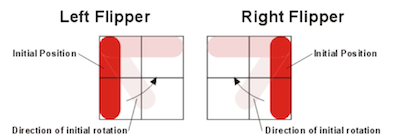

To describe dimensions in the playing area, we define L be the basic distance unit, equal to the edge length of a square bumper. Corresponding to standard usage in the graphics community, the origin is in the upper left-hand corner with coordinates increasing to the right and down.
The playing area must be 20 L wide by 20 L high. That is, 400 square bumpers could be placed on the playing area without overlapping. The upper left corner is (0,0) and the lower right corner is (20,20). When we say a gadget is at a particular location, that means that the gadget’s origin is at that location. The origin of each of the standard gadgets is the upper left-hand corner of its bounding box, so the location furthest from the origin at which a gadget may be placed is (19,19) on a 20L × 20L board. The origin of a ball is at its center.
The animation grid may be no coarser than 0.05 L by 0.05 L. Suppose that a ball is at (1,1) and is moving in the (1,0) direction – that is, left to right – at a rate of .05L per frame redraw. Then the ball should be displayed at least in positions (1,1), (1.05,1), (1.10,1), and can be displayed at more positions if you wish the animation to be smoother. Rotating flippers can be animated somewhat more coarsely; see the precise description of flippers below. If the ball is moving faster than the animation grid size per frame redraw, it need not be redrawn in each animation grid position.
The ball by default must have a diameter of approximately 0.5L. Ball velocities must range at least from 0.01 L/sec to 200 L/sec and can cover a larger range if you wish. 0 L/sec (stationary) must also be supported. An acceptable frame rate should be used to generate a smooth animation. We have found that 20 frames per second tends to work well across a reasonably wide range of platforms.
The ball should interact reasonably with the playing area. That is, the ball should bounce in the direction and with the resulting velocity that you would expect it to bounce in a physical pinball game.
The velocity of the ball should continually change to account for the effects of gravity. You should support the default gravity value of 25 L/sec2, which resembles a pinball game with a slightly tilted playing surface, but the board file may specify a different value for gravity.
The ball velocity should also continually change to account for the effects of friction. You should model friction by scaling the velocity of the ball using the frictional constants mu and mu2. For sufficiently small delta_t's you can model friction as Vnew = Vold × ( 1 - mu × delta_t - mu2 × |Vold| × delta_t ). The default value of mu should be 0.025 per second. The default value of mu2 should be 0.025 per L.
The standard gadgets that must be supported are described below.
Each gadget may have a trigger and an action. A trigger is an event that happens at the gadget, such as a ball colliding with it. An action is a response that a gadget can make to a trigger happening somewhere on the board. A gadget’s action can be hooked up to another gadget’s trigger, in order to produce Rube Goldberg machines. These hookups are specified by the board file format.
A gadget also has a coefficient of reflection, which is a multiplier applied to the magnitude of the ball’s velocity after it bounces off the gadget. Coefficient 1.0 means that the ball leaves the bumper with the same velocity with which it hit the bumper, but in a different direction. Coefficients less than 1.0 damp the ball’s velocity, and coefficients greater than 1.0 increase it. By default, all bumpers have reflection coefficients of 1.0, but you can optionally extend Pingball to allow different coefficients to be specified.
A square shape with edge length 1L
Trigger: generated whenever the ball hits it
Action: none
Coefficient of reflection: 1.0
A circular shape with diameter 1L
Trigger: generated whenever the ball hits it
Action: none
Coefficient of reflection: 1.0
A right-triangular shape with sides of length 1L and hypotenuse of length Sqrt(2)L
Trigger: generated whenever the ball hits it
Action: none
Coefficient of reflection: 1.0
A generally rectangular rotating shape with bounding box of size 2Lx2L
Trigger: generated whenever the ball hits it
Action: rotates 90 degrees (see below)
Coefficient of reflection: 0.95 (but see below)
In conventional pinball, flippers allow the user control the ball. Phase 1 of this project has no user interaction with the pinball game, however, so flippers can’t be controlled by the user. Phase 2 will change that to allow the user to trigger flippers with the keyboard.
Flippers are required to come in two different varieties, left flippers and right flippers. A left flipper begins its rotation in a counter-clockwise and a right flipper begins its rotation in a clockwise direction.
A flipper should never extend outside its bounding box. The below pictures show flipper placements for various initial rotations. When a flipper is first triggered, it sweeps 90 degrees in the direction indicated by the arrows. If triggered again, the flipper sweeps back 90 degrees to the initial position. In the pictures, the shape and design of the flippers are for illustrative purpose only – your final design may differ.

As with the three standard bumpers, a flipper generates a trigger whenever the ball hits it. When a flipper’s action is triggered, the flipper rotates at a constant angular velocity of 1080 degrees per second to a position 90 degrees away from its starting position. When its action is triggered a second time, the flipper rotates back to its original position at an angular velocity of 1080 degrees per second.
The standard coefficient of reflection for a flipper is 0.95. However, when computing the behavior of a ball bouncing off the flipper, you must account for the linear velocity of the part of the flipper that contacts the ball; therefore the ball may leave the flipper with a higher energy than it had when it reached it.
A rectangle kL × mL where k and m are positive integers <= 20.
Trigger: generated whenever the ball hits it
Action: shoots out a stored ball (see below)
Coefficient of reflection: not applicable; the ball is captured
An absorber simulates the ball-return mechanism in a pinball game. When a ball hits an absorber, the absorber stops the ball and holds it (unmoving) in the bottom right-hand corner of the absorber. The ball’s center is .25L from the bottom of the absorber and .25L from the right side of the absorber.
If the absorber is holding a ball, then the action of an absorber, when it is triggered, is to shoot the ball straight upwards in the direction of the top of the playing area. By default, the initial velocity of the ball should be 50L/sec. With the default gravity and the default values for friction, the value of 50L/sec gives the ball enough energy to lightly collide with the top wall, if the bottom of the absorber is at y=20L. If the absorber is not holding the ball, or if the previously ejected ball has not yet left the absorber, then the absorber takes no action when it receives a trigger signal.
An absorber can be made self-triggering by connecting its trigger to its own action. When the ball hits a self-triggering absorber, it should be moved to the bottom right-hand corner as described above, and then be shot upward as described above. There may or may not be a short delay between these events, at your discretion.
The border walls surrounding the playfield.
Trigger: none
Action: none
Coefficient of reflection: 1.0 (but see below)
A Pingball game supports exactly one set of outer walls, which lie just outside the playing area:
Each wall may be either solid or invisible. A solid wall is reflective, so that a ball bounces off it. An invisible wall allows a ball to pass through it, into another playing area. When the client is playing disconnected from a server, all four walls are solid. When the client is connected to a server, the server determines which of the client’s walls are solid and which are transparent, depending on how the client’s playing area is currently attached to other clients’ playing areas.
By convention, the Pingball board files in your repository should end with the extension .pb, so that your TA can easily find them.
Several sample board files have been provided.
You will have to build a parser that can read in board files in the format described below. You may find it useful to write a grammar and use the ANTLR parser-generator to create your parser. antlr.jar can be found in the code that was handed out from the lecture and recitation about grammars. You will have to put antlr.jar in your Eclipse project, add it to the build path, and make sure to commit and push it to your repo.
The following is an example of a very simple Pingball board file:
board name=Example
# define a ball
ball name=Ball x=1.8 y=4.5 xVelocity=-3.4 yVelocity=-2.3
# define some bumpers
squareBumper name=Square x=0 y=2
circleBumper name=Circle x=4 y=3
triangleBumper name=Tri x=1 y=1 orientation=270
# define some flippers
leftFlipper name=FlipL x=10 y=7 orientation=0
rightFlipper name=FlipR x=12 y=7 orientation=0
# define an absorber to catch the ball
absorber name=Abs x=0 y=19 width=20 height=1
# define events between gadgets
fire trigger=Square action=FlipL
# make the absorber self-triggering
fire trigger=Abs action=Abs
Each line in the file describes a board element, like a ball or bumper. Whitespace at the beginning or ending of lines is irrelevant. Extra whitespace between tokens of a line (words or =) are not important. Lines that are blank, or lines that start with a #, are ignored.
# this is a comment
# this is also commentThe specification below refers to integers, floating point numbers, and names, which are specified as follows:
INTEGER ::= [0-9]+
FLOAT ::= -?([0-9]+.[0-9]*|.?[0-9]+)
NAME ::= [A-Za-z_][A-Za-z_0-9]*
We now describe each kind of line that may appear in the board file.
board name=NAME gravity=FLOAT friction1=FLOAT friction2=FLOAT
Defines a board. This line must be the first non-comment line in a valid Pingball
board, and exactly one board line must appear in the file. The gravity of the board is set to gravity L/sec2 (default 25.0) in the downward direction. The global friction constants are set such that mu and mu2
(as described in the friction formula) are friction1 and friction2, respectively
(both have a default value of 0.025).
ball name=NAME x=FLOAT y=FLOAT xVelocity=FLOAT yVelocity=FLOAT
Creates a ball whose center is (x,y) and whose velocity is (xVelocity, yVelocity). Within the file, the name must be unique, and may be used later to refer to this specific ball.
squareBumper name=NAME x=INTEGER y=INTEGER
circleBumper name=NAME x=INTEGER y=INTEGER
triangleBumper name=NAME x=INTEGER y=INTEGER orientation=0|90|180|270
rightFlipper name=NAME x=INTEGER y=INTEGER orientation=0|90|180|270
leftFlipper name=NAME x=INTEGER y=INTEGER orientation=0|90|180|270
Creates the given gadget with its upper left-corner at (x,y) and with the given orientation. Within the file, the name must be unique, and may be used later to refer to this specific gadget. Consider the names of gadgets (e.g., squareBumper, circleBumper) and any other variable names to be reserved. For example, you do not need to support “ball name = ball”, or “squareBumper name = squareBumper”.
Orientation determines how the gadget is rotated from its default orientation, which is orientation=0. For triangleBumper, orientation=0 places one corner in the north-east, one corner in the north-west, and the last corner in the south-west. The diagonal goes from the south-west corner to north-east corner. For leftFlipper, orientation=0 places the flipper’s pivot point in the north-west corner. For rightFlipper, orientation=0 puts the pivot point in the north-east corner.
When orientation is 90, 180, or 270, the value indicates a clockwise rotation in degrees of the whole gadget from the default orientation.
absorber name=NAME x=INTEGER y=INTEGER width=INTEGER height=INTEGER
Creates an absorber with its upper left-hand corner at (x,y) that is width wide and height tall. width and height must both be greater or equal to 1 and must not cause the absorber to extend off of the board. Within the file, the name must be unique, and may be used later to refer to this specific absorber.
fire trigger=NAME action=NAME
Makes the gadget named by action a consumer of the trigger events produced by
the gadget named by trigger. For example, if trigger names a bumper and action names a flipper, then every time a ball hits the bumper, the flipper will rotate to its other state. A gadget can be a trigger for the actions of multiple gadgets, and a gadget’s action can be triggered by multiple gadgets. A gadget can also trigger its own action. For example, an absorber that triggers its own action would be used to make a perpetual pinball game that automatically shoots out the ball whenever it falls into the absorber.
Your Pingball client should have its main method in a class called PingballClient.java. The package structure of the project is up to you, but make it sensible so that your TA can find your client easily.
The Pingball client should take a command-line argument, the filename of a board file to load:
PingballClient FILE
After loading the file, the client should begin playing it. For Phase 1 of the project, the running game should be displayed as a sequence of frames printed to the console. Each frame should display the gadgets and balls in a 20x20 character grid, using these characters:
*#O/ for orientation 0 or 180, \ for orientation 90 or 270 | when vertical, - when horizontal=.For example, here is a board with a row of 5 square bumpers at the top; a triangle bumper on the right; two circle bumpers with a ball in flight between them; two flippers; and an absorber across the bottom.
...................... . ##### . . . . . . . . . . . . . . \. . . . . . * . . O O . . . . . . . . | -- . . | . . . . . .====================. ......................
Note that this display omits some details that should still be represented in the simulation. For example, it shows which grid cell contains the ball, but doesn’t show exactly where the ball is within that cell. It also doesn’t show the exact orientation of triangle bumpers.
Phase 2 of the project, at the end of the semester, will augment this text-mode display with a more attractive and more precise graphical user interface, which will also support user interaction using the keyboard.
Pingball also has a client-server mode. In this mode, each client simulates its own board. The server joins the outer walls of clients together, so that a ball exiting one client’s playing area can enter another client.
Your Pingball server should have its main method in a class called PingballServer.java. Again, the package structure is up to you, but make it sensible so that your TA can find your client easily. The Pingball server should be started with command-line arguments as follows:
Usage:
PingballServer [--port PORT]PORT is an optional integer in the range 0 to 65535 inclusive, specifying the port where the server should listen for incoming connections. The default port is 10987.
For client-server play, the Pingball client should be started with command-line arguments as follows:
Usage:
PingballClient [--host HOST] [--port PORT] FILEHOST is an optional hostname or IP address of the server to connect to. If no HOST is provided, then the client starts in single-machine play mode, as described above.
PORT is an optional integer in the range 0 to 65535 inclusive, specifying the port where the server is listening for incoming connections. The default port is 10987.
FILE is a required argument specifying a file pathname of the Pingball board that this client should run.
The server has a set of connected clients. Each client manages a single 20x20 Pingball board. The server keeps track of how the outer walls of these boards are joined together, so that balls can pass between the boards.
A board can have a name, specified in the board line at the top of its board file. Only named boards can be joined with other boards. Clients who connect to the server while running an unnamed board can’t participate in joins with other clients. If two or more clients are running a board with the same name, the behavior is unspecified.
The server is configured by a command-line interface read from System.in (typed by a user). Each command is on one line, and whitespace at the beginning or ending of lines is irrelevant. Extra whitespace between tokens of a line are not important. Lines that do not match commands should report an error message.
Two boards can be joined side-by-side using the following command:
h NAME_left NAME_right
The effect of this command is to join NAME_left’s right wall with NAME_right’s left wall. NAME_left and NAME_right are both board names, which follow the same syntax allowed for NAME in the board file.
Two boards can be joined top-and-bottom using the following command:
v NAME_top NAME_bottom
The effect of this command is to join NAME_top’s bottom wall with NAME_bottom’s top wall.
When two walls are joined, both walls become invisible, permeable to balls. A ball arriving on one side of the joined wall, on one client, is immediately transported to the corresponding position on the other side, on the other client. It maintains the same velocity vector, but now obeys the gravity and friction of the new board it has entered.
Boards can be joined in arbitrary topologies, even if they can’t exist in two-dimensional Euclidean space. For example, a board’s own walls can be joined together, forming a torus.
If one of the walls involved in a join command was previously joined to a different board, then the previous join will be broken, reverting the previous board’s wall to solid.
When a client disconnects from the server, any boards joined to it revert to solid walls. The server forgets the lost client’s joins, so if a client reconnects with the same board name, it does not automatically regain its joined walls, but must be rejoined with fresh h and v commands to the server.
When a client disconnects, any balls on the client’s board are lost.
Note that this section does not specify the network protocol between client and server. The commands in this section are not sent over the network, but are instead typed by a user on the console, to instruct the server how to join together clients that are currently connected to it. The network protocol is different. You will have to define your own network protocol that specifies how a client connects to the server, tells the server what it needs to know about its board, and sends and receives balls through the server.
Your text mode display should show to the user which walls are joined with other boards, by displaying the other board’s name (or as much as fits) in the joined wall. For example, a board that is joined at the top to a board named Mars and on the left to a board named Mercury might look like this:
..........Mars........ . ##### . . . . . . . . . . . M . e \. r . c . u * . r O O . y . . . . . . | -- . . | . . . . . .====================. ......................
The exact position and content of the board labels is left unspecified, but they should be readable to a human being.